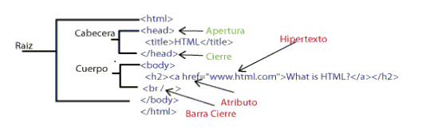

TEMA 1
Introducción a la WWW
EI1042 - Tecnologías y Aplicaciones Web
EI1036- Tecnologías Web para los Sistemas de Información (2021/2022)
Profesorado: Dra. Dolores María Llidó Escrivá

Tabla de contenidos
- Introducción Wordpress
- Conceptos de Wordpress
- Escritorio principal WP
- WP CORE FILES
- Arquitectura cliente servidor Web
- Localización de recursos: URL
- Clientes Web
- Servidores Web
- El protocolo HTTP
- Configuración Apache:.htaccess
- Proceso de producción del portal web
- Definición un proyecto Web
- Servidor web con PHP.
1. WordPress (WP)
Es un gestor de contenidos web (Content Manager System -CMS-). Especialmente dirigidos a:
- Sitio web (https://www.webempresa.com/)
- Blogs (http://www.dulceida.com/)
- Combinaciones web/blog
Urls:
- http://wordpress.org: para descargar WP para instalarlo en nuestros servidores o en local.
- http://wordpress.com: para obtener hosting con WP.
Continua ↓
CMS WordPress
 https://www.slideshare.net/amikeliunas/introduction-to-wordpress-class-1
https://www.slideshare.net/amikeliunas/introduction-to-wordpress-class-1
Cuentas requeridas al instalar WordPress
-
La cuenta del hosting:
-
Cuenta en la base de datos de WP.
-
Cuenta del super-administrador de tu instalación de WP.

2. Conceptos Básicos del CMS:
- Tema
- Página
- Entrada de un blog (Post)
- Comentario a una entrada
- Categoría (grupos de posts/páginas)
- Etiqueta (palabras clave)
- Atajos (Shortcode)
- Plugin
- Widget
- Menu
Lectura Individual ↓
Conceptos
- Página: Contenido sin dependencia (sitio web clásico).
- Entrada o artículo (post): componente básica de contenido de un blog.
- Comentario: textos breves asociados a una entrada escritos por terceras personas.
- Categoría: agrupamientos de contenido en WordPress. Admite la construcción de jerarquías (subcategorías).
- Etiqueta (tags) palabras clave asociadas a páginas, artículos o entradas.
- Atajos (shortcode): texto entre las marcas [ ] que se sustituyen por el resultado de una función PHP (ej.- [woocommerce_cart])
Conceptos
- Tema: plantillas que se utilizan en WP para definir la apariencia y diseño del sitio.
- Plugin: complementos de software que aumentan las capacidades y posibilidades de WP. Los plugins se usan para mejorar WP en diferentes áreas como marketing, redes sociales, seguridad, SEO, diseño web, contenido, tráfico web, etc.
- Widgets: pequeños bloques con herramientas que realizan funciones específicas y que están pensados para ubicarse en ciertas áreas del tema en curso, como el pie o la barra lateral (sidebar). Ayudan a darte un mayor control sobre el diseño y contenido de tu sitio web o blog. Los widgets se pueden expandir y usar de diferente forma dependiendo del tema y de los plugins que se instalen.
- Menu: Menús de navegación y acceso a distintos servicios del portal.
Cualquier widget o menú creado en WP se muestra, por defecto, en todas las páginas del sitio web.
Categorías/Taxonomías
Las taxonomías de WP son un mecanismo de agrupamiento o categorización de los elementos de contenido y otros tipos de elementos de la aplicación.
- Categorías: actúan a modo de contenedores semánticos que sirven para organizar temáticamente las entradas del sitio web. Son jerárquicas, lo cual supone que pueden existir categorías, subcategorías, sub-subcategorías, etc.
- Etiquetas: descriptores semánticos del contenido de las entradas. No son jerárquicas (equivalente al glosario de palabras clave)
- Categorías de enlaces: permiten categorizar los enlaces, de forma semejante a como lo hacen las categorías de entradas. Desde la versión 3.5, tanto los enlaces como las categorías de enlaces ya no son visibles en una instalación estándar de WP.
- Formatos de entradas: sirven para agrupar ciertos metadatos de información de las entradas, que pueden ser utilizados por un tema a fin de personalizar su presentación.
Uso taxonomías
- Las taxonomías contribuyen a jerarquizar el contenido y proporcionan “pistas” para que los buscadores puedan indexar los sitios web de forma eficiente.
Custom Fields para las entradas de Blogs
-
Permite a los autores asignar campos personalizados a entradas de un blog (metadatos). Por ejemplo, el autor, el revisor, la fecha del post, etc.
-
Los metadatos se manejan siempre como pares clave/valor.
-
El administrador del blog puede utilizar campos existentes (plugins) o crear nuevos.
Después de escribir la entrada del blog, puedes acceder a sus metadatos desde el área “Custom Fields”. Estos datos serán accesibles desde PHP con una serie de funciones (the_meta(), get_post_custom(), get_post_meta(), get_post_custom_values(), etc.)
¿Cuestiones?
3. FrontEnd / Backend
Continua ↓
Backend: Escritorio Principal
(user: Admin)
Panel de control
- Configurar el portal (tipo site/blog).
- Seleccionar tema.
- Gestionar usuarios.
- Gestionar taxonomías.
- Gestionar plugins.
- Actualizaciones.
- Gestionar los distintos recursos del site: multimedia (imágenes, videos…).
Continua ↓
Roles de Usuarios
- SuperAdmin – Quién cuenta con acceso a la característica de administración de la red de sitios completa. Una instalación de WP permite gestionar varios sitios en el mismo alojamiento.
- Administrador – Quién tiene acceso a todas las características de administración de un sitio en particular.
- Editor – Quién puede publicar y editar entradas, propias y de otros usuarios.
- Autor – Quién puede publicar y editar sus propias entradas.
- Colaborador – Quién puede escribir y editar sus propias entradas, pero no publicarlas.
- Subscriptor – Quién solamente puede editar su perfil.
Lectura Individual ↓
Tareas Administrador
- Actualizaciones. En esta opción podrás ver todo lo relacionado con las diferentes actualizaciones disponibles para WP, incluyendo la versión de la plataforma, temas y plugins. Es importante mantener actualizado todo, por motivos de seguridad.
- Entradas. Desde aquí puedes administrarlas. También en esta sección podrás agregar y modificar tanto categorías como etiquetas.
- Media. Agrega imágenes, archivos y hasta pequeños vídeos para usarlos en tus entradas o páginas.
- Páginas. A diferencia de las entradas, no tienen fecha de publicación.
- Comentarios. Área en donde administras todos los comentarios que se van publicando ya sea en tu blog o en tus páginas. Los puedes editar, eliminar o mandar al spam. También puedes seleccionar si prefieres primero verlos y aprobarlos o que se publiquen automáticamente.
- Información de tu tema o plantilla. Este apartado no aparece en todos los casos, más bien solo cuando utilizas un tema “Premium” o que tiene su propio panel de opciones para modificar su estructura y diseño.
- Apariencia. En esta sección puedes agregar, instalar o eliminar nuevos temas, administrar los widgets, crear y modificar menús, editar el código de los archivos de tu tema (incluyendo el CSS) y también personalizar el título y la portada estática de tu tema (la página de inicio).
- Plugins. Agrega, modifica, instala o elimina nuevos plugins.
- Usuarios. Aquí puedes modificar tu perfil, agregar tus links de redes sociales, cambiar tu alias, tu email e información básica. Si otras personas van a editar tu sitio o publicar contenido, en esta sección puedes crearles un perfil y definir su rol.
- Herramientas. Importar y exportar son las opciones disponibles inicialmente. Si instalas ciertos plugins, su panel de opciones podría aparecer en esta sección.
- Ajustes. Toda la configuración básica de tu sitio se hace en esta parte. También podrás modificar las opciones de cualquier plugin que instales en esta sección. De entrada tendrás acceso a configurar las opciones generales, de escritura, de lectura, de comentarios, de medios y de enlaces permanentes.
4. Tripas del WP
Sistema de ficheros
Continua ↓
Base de datos
Arquitectura Cliente Servidor

HTML

<!DOCTYPE html >
<li id="section-3" class="section main clearfix" role="region" aria-label="Laboratorio">
URL: Uniform Resource Locator
Són cadenas de caracteres con un formato que identifica recursos indicando su dirección electrónica
<esquema>://<user>:<password>@<host>:<port>/<url-path>
esquema=protocolo sistema:
-
http://host[:port][abs_path]
-
ftp://al007@anubis.uji.es/un/ejemplo.txt
https://aulavirtual.uji.es/course/view.php?id=64297#section-3
Continua ↓
Ejemplo URL HTTP
- http://www.milanuncios.com/informaticos-en-almeria/pp.htm?dias=1&demanda=n
- https://duckduckgo.com/?q=pp&t=ffab&ia=about
- https://www.google.es/search?q=llido&as_sitesearch=uji.es&gfe_rd=ssl&ei=pRDx
- http://dllido.al.nisu.org/EI1036_1042/PortalJson.php?action=modificarAlumnoJson
- https://aulavirtual.uji.es/course/view.php?id=64297#section-3
Caracteres especiales:
- /: Indica path del recurso
- #: indica una etiqueta que tiene el id referenciado (< id==section-3>)
- &,=: El cliente web los datos del formulario cuando se usa el método get los envia como pares nombre=valor unidos por &
URL amigables
http://www.example.com/camaras/reflex/canon-eos-5d-mark-2/
- Mejora el SEO
- El servidor manipula la URL para redirigir esta url a los recursos internos correctamente. Continua ↓
URL amigables
- Página de entradas de la categoría correspondiente a la primera sesión del curso: https://cursoswp.educacion.navarra.es/cursowp2018/categoria/sesion-1/. La “Sesión 1” es una categoría de entradas, que agrupa todos los elementos de contenido que se tratarán en dicha sesión.
- Página de las entradas que han sido marcadas con la etiqueta “widgets”: https://cursoswp.educacion.navarra.es/cursowp2018/etiqueta/widgets/. La etiqueta “widgets” es un marcador semántico que sirve para poder agrupar todos los artículos que contengan dicho concepto.
Clients Web
Clientes Web CURL/GET
-
Descargar un documento html. curl http://www.pekegifs.com/pekemundo/dibujos/colorearonline.htm -o pp.html
-
Descargar todos los ficheros MP3 de un subdirectorio.
wget ‐‐level=1 ‐‐recursive ‐‐no-parent ‐‐accept mp3,MP3 http://example.com/mp3/
Servidor Web
El protocolo HTTP
Cliente
GET /un/ejemplo.html HTTP/1.0 CRLF
User Agent: Mozilla CRLF
(..)
Referer:http://anubis.uji.es/index.html
CRLF
Servidor
HTTP/1.1 200 OK CRLF
Date: Mon, 27 Sep 199 21:23:20 GMT CRLF
Server: Apache/1.3.3 (Unix) CRLF
Last-Modified: Sun, 26 Sep 1999 ... CRLF
Content-Length: 5654 CRLF
Content-Type: text/html CRLF
CRLF
<PAGE HTML>
Continua ↓
Navegadores: Herramientas para desarrolladores
Métodos
GET|HEAD|POST|PUT|DELETE |OPTIONS|TRACE
- HEAD: recupera las cabeceras HTTP de respuesta.
- obtener meta-información sobre el recurso.
- comprobar la validez de hiperenlaces.
- comprobar la accesibilidad, actualización, etc.
- POST: ejecuta el recurso con los datos del cuerpo de la petición.
- Envío de un mensaje a un grupo de noticias.
- Insertar un nuevo registro en una base de datos.
- Formularios.
Códigos de estado HTTP
- 2xx: la petición se realizó con éxito.
- 200 OK.
- 3xx: redirecciones.
- 301 Moved Permanently.
- 302 Moved Temporarily
- 4xx: error del cliente
- 400 Bad Request
- 403 Forbidden
- 404 Not Found
- 5xx: error del servidor
- 500 Internal Server Error
- 501 Not Implemented
Robots.txt
-
Fichero donde indicar el comportamiento que tienen que tener los buscadores y los programas de descargas sobre el servidor.
-
Se supone que todos los programas de descarga deben respetarlo, aunque no siempre es así.
-
Se utilizan 2 directivas:
- User-agent:
- Disallow:
Continua ↓
Ejemplos:
#Para desactivar todas la arañas:
User-agent: *
Disallow: /
#Prohibimos que las arañas carguen los directorios /cgi-bin/ y /imágenes/
User-agent: *
Disallow: /cgi-bin/
Disallow: /imagenes/
#Prohibimos que emailspider lea cualquier página
User-agent: emailspider
Disallow: /
Configuración Servidor apache:
-
http.conf
-
.htaccess (personalizado en directorios)
Más Info:
#.htaccess
Options +Indexes
RewriteEngine on
RewriteBase /Lab2017/T
RewriteRule pp/(.*)/(.*)$ phpInfo.php?Val1=$1&Val2=$
https://httpd.apache.org/docs/2.4/mod/mod_rewrite.html
Continua ↓
Ejemplos .htaccess
# listar directorios
Options +Indexes
IndexOptions -FancyIndexing
https://asociacionpiruleta.cloudaccess.host/PHP/T1/
# No listar directorios
Options -Indexes
##Configuración en apache para URLs de wordpress
# BEGIN WordPress
<IfModule mod_rewrite.c>
RewriteEngine On
RewriteBase /
RewriteRule ^index\.php$ - [L]
RewriteCond %{REQUEST_FILENAME} !-f
RewriteCond %{REQUEST_FILENAME} !-d
RewriteRule . /index.php [L]
</IfModule>
# END WordPress
Si existe el fichero o directorio los muestra como otro servidor apache. En caso contrario lo intenta cargar con wordpress.
Sesión
HTTP es un protocolo sin sesión.
- ¿Cómo evitamos que pida reiteradamente la autentificación?
- ¿Cómo recordamos el carrito de la compra?
Continua ↓
Simulación de la Sesión
- A partir de controles HTML ocultos.
<INPUT type="hidden" name="session" value="1234"> - URL rewriting.
- Uso cookies.
- Una combinación de cookie y bases de datos.
- Usar el objeto SESSION provisto por los entornos de programación como PHP, ASP o J2EE
URL REWRITING
Consiste en incluir la información del estado en la propio URL
http://www.pekegifs.com/pekemundo/dibujos//comprar.asp?paso=3&producto1=01992CX&producto2=ZZ112230&
Cookies
Una cookie es información que un servidor puede enviar al cliente para que la almacene y se reenvíe en posteriores accesos (header).
Permiten:
- Recordar preferencias de un cliente para generar contenido personalizado
- Para almacenar información de sesión
- En general: para “simular” sesiones
- No para almacenar información privada. claves, cuentas…
Variables de las Cookies
fichero con pares nombre=valor de tamaño limitado.
- name= nombre de la cookie
- expires=DD-Month-YY HH:MM:SS GMT fecha caducidad.
- secure=tipo de seguridad (sólo en HTTPS)
- path= ruta específica a los recursos a los que se envía la - cookie. Por defecto lo añade el servidor.
- domain=ámbito con el cual el cliente identifica si debe enviar la cookie al servidor
Ejemplo de cookies en Chrome
Contras Cookies
- Privacidad: Otros servidores podrían pueden leer información de las cookies del cliente.
- Los datos pueden ser alterados: Un usuario podría modificar el fichero de una cookie.
- Implementación compleja: Mantener “a mano” el estado en el cliente es complicado si queremos hacerlo de manera robusta.
- Tamaño de datos limitado: Tanto el tamaño máximo permitido por las cookies como la longitud máxima de una URL pueden darnos problemas.
Proceso de Producción de un Proyecto Web
- Planificación
- Diseño
- Prototipado
- Desarrollo
- Implementación
- Evaluación
- Mantenimiento
Continua ↓
Definición un proyecto Web
Arquitectura de la informació: Thumbnail
Diseño web: WireFrame
Prototipado: Mockup
Definición de la interficie de cada servicio
| Title | Título |
|---|---|
| URL | URL |
| Method | GET/POST |
| URL Params | Parámetros en la URL |
| Data Params | Parámetros que requiere/envía el formulario |
| Success | Respuesta si el registro es correctamente |
| Error | Respuesta si hay algún error |
| Notes | Precondiciones/postcondiciones |
| Title | R01 Name:Registro |
|---|---|
| URL | Portal.php?action=registro |
| Method | GET |
| URL Params | action |
| Description | El usuario quiere registrarse en el portal. |
| Data Params | Nombre, Email, Clave |
| Success | Portal.php?action= registrar |
| Error | Indica errores y vuelve cargar la misma página |
| Notes | - Poner un enlace en portal en el menú pero ocultar al autentificar. |
| - Al hacer click se muestra formulario. | |
| - Tras rellenar campos el usuario debe dar a enviar. |
Servidor WEB con PHP
¿Cómo funciona el intérprete de PHP?